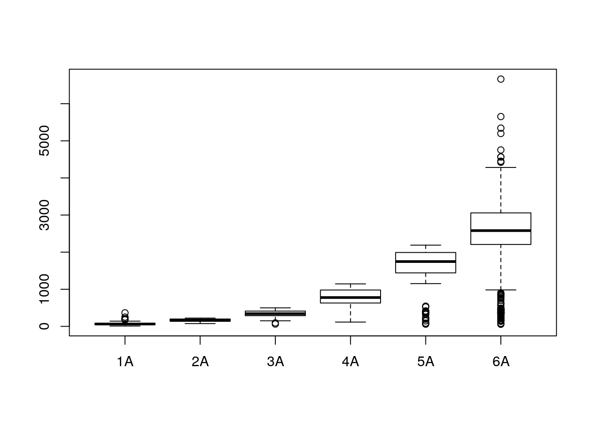
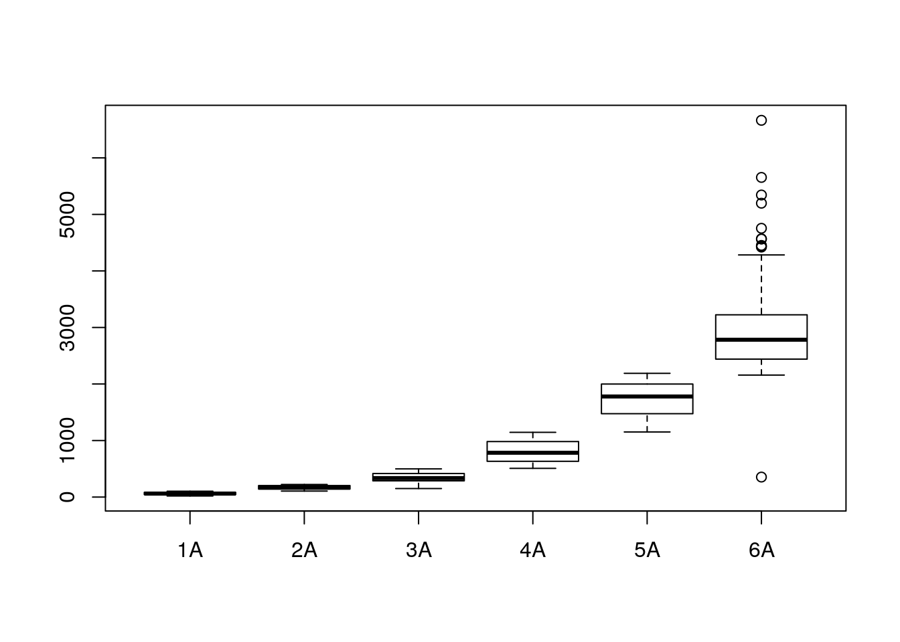
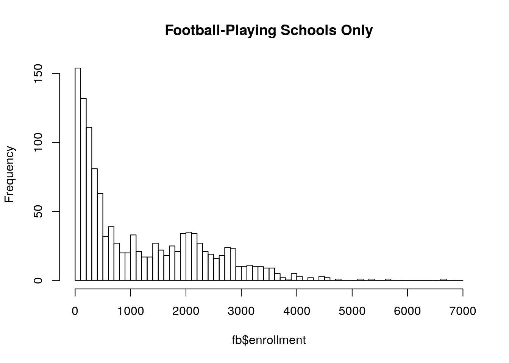

Chapter 2 UIL
Every two years, the governing body for public secondary school sports uses attendance figures to create the classifications and districts of competition for the schools in the state of Texas. This year’s announcement may be found on their site, here. The PDF file that was used to source the data is linked to from the same page. Looks like a footnote at the bottom of the page.
Wanting to experiment more with R, the publication of enrollment figures offers a nice large dataset (> 1400 entries) to use as a training ground. R offers some of its own canned sets, but I work better when I have some personal context for the data. In this case, Texas High School Football (#txhsfb).
2.1 Data Source and Prep
- Obtained original report from Texas UIL, as a PDF
- Used
pstotextto convert the PDF to PS then to an ASCII TXT - basic editor allowed for formatting the resulting file as a CSV using the pipe symbol rather than spaces or commas as field separators
- slurped the CSV with a spreadsheet, manually corrected any remaining column disparities, then saved as CSV for R
2.2 Pass One, All Schools
I dumped everything from the CSV file into an R boxplot request and got this for my effort:

You’ll notice there are some significant outliers visible in the 6A classification. That told me there were schools with really small enrollments that were in the 6A classification. It didn’t make any sense. There must be a mistake.
There was. None of those schools play football.
So my second pass considered only schools that played football - that is after all, my real interest here.
2.3 Pass Two, Football-Playing Schools
Okay, so now things look different:

But we still have an outlier. There’s a school in 6A with an enrollment of less than 500 ? Yep, lets find it. grep -n 6A football.csv | grep -e '|[0-9]\{3\}|' yielded:
And so I tried to find out if that was legitimate or some kind of typo. It’s not. Apparently this is a school that falls under a Texas UIL requirement that forces it to play in the same classification as the largest school in its governing school district. Since that’s the Ft Worth ISD, … 6A it is.
2.4 Distribution of Football-Playing Schools
Finally, I wanted to look at the distribution of school sizes. It was enlightening. Texas is a big, wide-spread state. There are only four major population centers - Houston, Dallas / Ft. Worth, Austin, and San Antonio.
Take a look at the enrollment distributions - bars represent increments of 100 students.

raw data for this site may be found in the texas-hs-enrollment-analysis directory of the repo for this github pages site